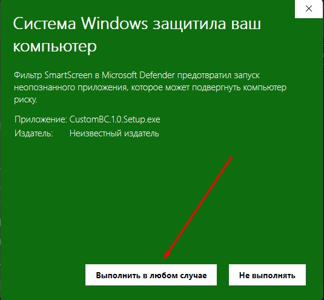
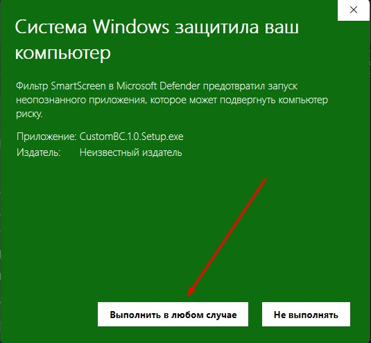

Новости
Как скачать мод?
 

Шаг 1
Зайдите на наш сайт и вверху страницы будет 3 ссылки для скачивания, выберите вами удобный способ скачивания и приступайте
Шаг 2
После скачивания, откройте установщик
Внимание!
Если вас остановил антивирус, просто игнорируйте его и загружайте мод дальше
Шаг 3
Когда зайдёте в установщик, согласитесь со всеми условиями, выберите место расположения куда вы загрузите ваш мод, создавать ли ярлык на рабочем столе и т.д
Завершение
Когда вы всё сделали, можно начинать играть
Можно ли поиграть в этот мод в браузере?
Ответ
В данный момент это невозможно
Я боюсь скачивать мод, а вдруг там вирусы?
Ответ
Нам нет умысла причинять вашим устройствам вред. Тем более при скачивании ванильного билда вас также остановит анти-вирус. Так что по факту CustomBC это точно такой-же билд, только с изменённым кодом.
А в вашем моде есть бесплатные предметы?
Ответ
С версии 1.0, все предметы игры бесплатные.
С какой целью создан этот мод?
Ответ
Мод создан с целью дать игре вторую жизнь, поднять онлайн и снова радовать игроков обновлениями, хоть и неофициальными.
А в него можно играть со своего аккаунта?
Ответ
Да, главное чтобы вы помнили логин и пароль. Ну а если у вас аккаунт привязан к ВК, то можете вообще не переживать.
А в этом моде есть читы?
Ответ
Нет, в этом моде нет никаких читов!
А как вы делаете моды?
Ответ
Не можем сказать, ибо если мы это скажем. То в игре будет хаос.